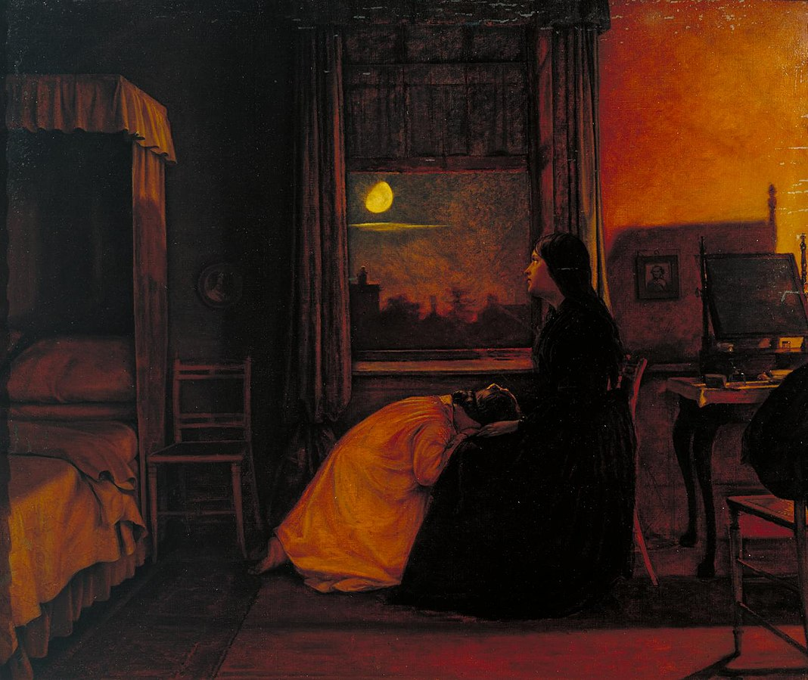
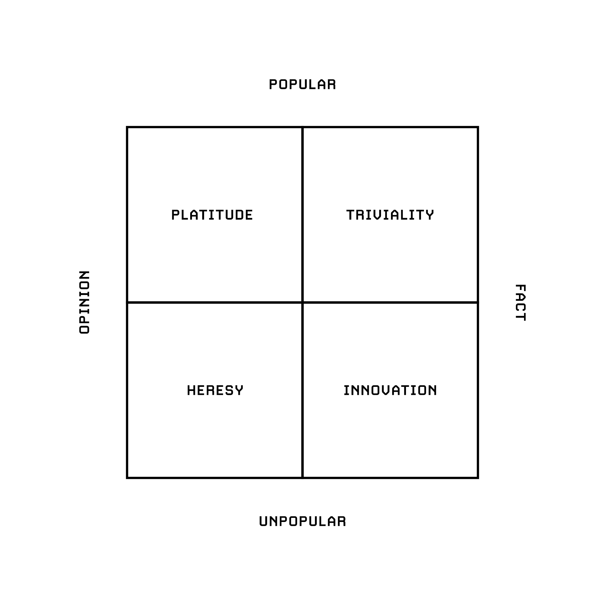
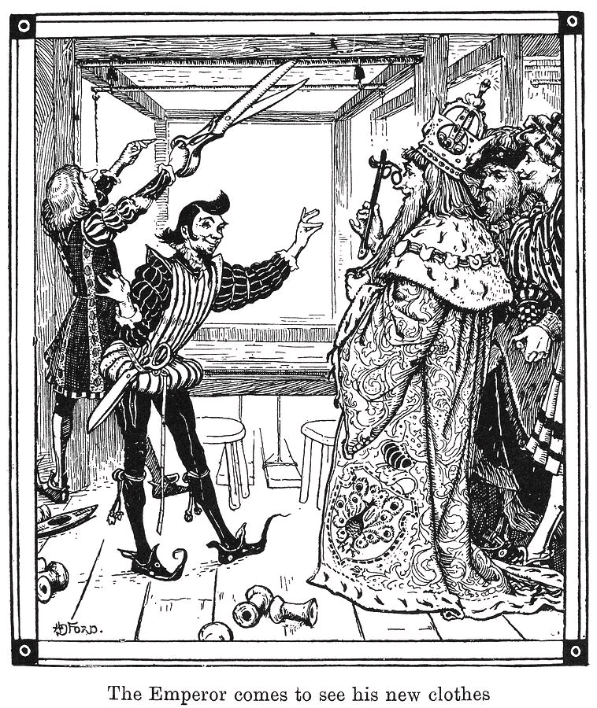
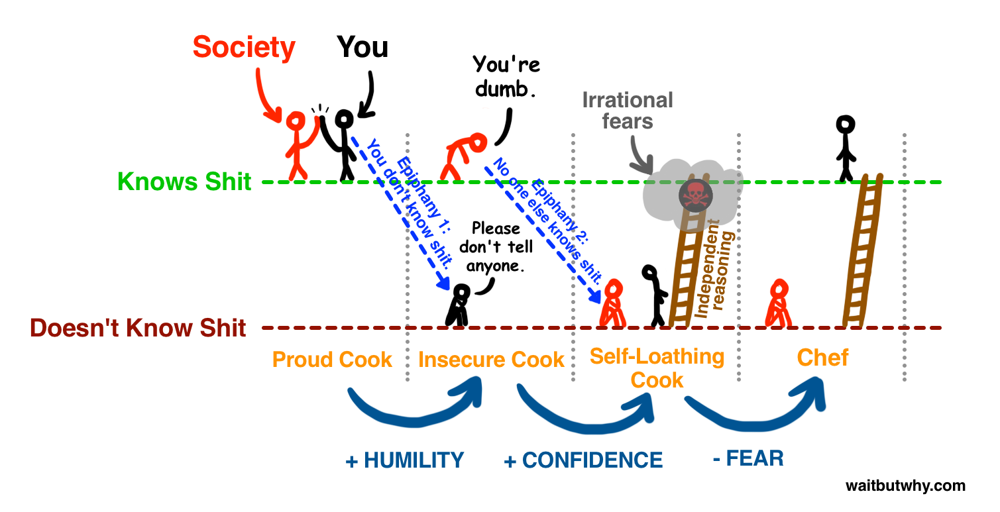

If the Threat Wins
When everyone is sick, we no longer consider it a disease.
~ Naval Ravikant
Over the past 200,000 years, an estimated 115 billion humans have walked the Earth. As of 2024, around 6.9 billion people—roughly 86% of the current global population—have access to a smartphone. This means that 94% of all humans who have ever lived never had this technology. We find ourselves in a uniquely transformative and unnerving era, where the long-term effects of smartphones on our biology remain largely unknown.
The media scaremongers with convoluted complexity intended to paralyze consumers’ rationality and weaponize their contemptuously emotional impulses. They call it the media because it mediates our interpretation of reality. If you are what you eat, then it should be equally true that you think what you see. This is why social networks are free to use; in order to maximize their signaling potential, they need to acquire as many users as possible. Although, financially, the most lucrative strategy for software companies is to provide distribution for free and instead monetize users who want to stand out of the crowd with paid signal amplification.
Social media behemoths have formed ecosystems specifically and scientifically designed to hijack our attention, rather than creating a useful and healthy experience for the end user. This is valuable to anyone selling targeted ads while violating your privacy for profit. Technology isn’t morally good or bad until it’s wielded by the corporations that fashion it for mass consumption.
If it enrages, it engages. A scissor statement is a claim that feels obviously true to one group and obviously false to another. Media and social platforms actively seek out and amplify these statements because outrage drives engagement. When conflict attracts more attention, and attention translates into revenue, the incentive structure becomes dangerous. The more division they create, the more they profit. In other words, conflict gets attention, and attention is currency.
Attention is the most valuable resource you have with due respect to time. Attention is what you decide to do with your limited willpower reservoir. There is abundance in the world of attention, and your attention is drained by every activity in which you decide to partake. There is a constant tension between the finitude of existence and the infinity of potential things to do. Time management means coming to terms with that tension, and contemptibly choosing what not to do.
Life is more convenient than ever, but convenience has also weaponized temptation. The signal-to-noise ratio will change for the worse. It seems that the noise always grows faster than the signal. A world of common thinking available on demand will tempt people to outsource their thinking and disproportionately reward people who don’t. In the future, clear thinking will become more valuable, not less. These social networks still rely on some critical mass and network effects, but need to set an artificial limit to the amount of people who can join. If membership isn’t scarce, the membership loses its signal message. The same applies to physical products: Apple will never offer a cheap iPhone to compete with low-end Android devices. It would destroy the company’s signal message that the iPhone is a luxury product. As a rule of thumb, argue with signal sources, not signal repeaters.
Complexity is wielded by magical charlatans who turn profit to your confusion simply because you’ve mistook the lost art of mastery in the form of simplicity. How can we drown out mindless driveling noise which includes AI generated content and tune into valuable signal? Can a reversion to signal become a virtue? Can it stimulate a profit? Is it possible given economic market trends?
We’re now living in what some call the dead internet era: a digital ecosystem so polluted by bots, fake accounts, and automated engagement that genuine human discourse is being drowned out. The information space has become corrupted, and we’ve built machines that accelerate that corruption. Worse still, the entire business model of the internet rewards this decay: the more synthetic the outrage, the higher the engagement, and the more profitable the deception.
It’s chaos in informational terms; you cannot fault people for being confused, impatient, and at their wit’s end. I think it’s disturbing and infuriating that powerful interests would seek to confuse people about scientific topics. The deception alone is disturbing and infuriating. The trickery becomes murderous when people’s health is at stake.

Augustus Leopold Egg, Past and Present, No. 2, 1858. Oil on canvas.
Ideological chaos is what creates malleable and easily manipulable beings. In 1978, Hannah Arendt wrote:
If everybody always lies to you, the consequence is not that you believe the lies, but rather that nobody believes anything any longer. And a people that can no longer believe anything cannot make up its mind. It is deprived not only of its capacity to act but also of its capacity to think and to judge. And with such a people, you can then do what you please.
In this context, one striking example of synthetic media’s viral power came in early 2023, when a series of convincingly realistic but entirely fabricated images of Donald Trump’s arrest spread rapidly across social media, blurring the boundary between documentation and deception. This was just the beginning of AI’s capability.
Eliot Higgins, Donald Trump Arrest (AI-generated series), 2023. Digital images created with Midjourney.
What began as an experiment in showcasing an AI model’s capabilities quickly became a cultural event: a disastrous dawn that foreshadowed the uncanny realism and existential dangers of generative technology. The episode revealed how effortlessly fiction could now masquerade as fact, inaugurating a new era in which the synthetic and the real are almost indistinguishable, and where public trust itself becomes the first casualty.
With detached confidence and an aura of authority, AI systems can now deliver responses that we often accept without question. This illusion of certainty feeds into a broader social dynamic that Alexis de Tocqueville once warned about—a paradox in which, as conditions improve, people become more sensitive to smaller imperfections. Combine that with what psychologists call concept creep—the gradual expansion of moral and psychological concepts like harm or trauma to include an ever-widening range of experiences—and you begin to see the contours of a society primed for grievance wrapped in a victimhood mindset. When life gets easier, our minds don’t simply relax; they adapt by finding new sources of perceived threat. We maintain a constant state of vigilance, even when real dangers have diminished. In doing so, we unconsciously manufacture new crises to fill the void, preserving the feeling of conflict that once served a purpose but now merely sustains anxiety and division.
What I’m trying to say is that when times improve, our minds often have this instinct to maintain the same level of perceived threat or vigilance. We might feel the need to keep that sense of threat constant, even when external circumstances get better. As a result, in order to maintain this level of vigilance, we unconsciously create new threats, even though the actual danger has decreased. Can superordinate goals ameliorate the damage? Perhaps, if they’re genuine and grounded in shared reality. Superordinate goals, by definition, demand cooperation across divisions, redirecting attention toward what unites rather than divides. Yet in an online environment built for outrage, even common causes can be twisted into new arenas of conflict. To work, such goals must be tangible and collective—like safeguarding the planet, public health, or the integrity of our information space. The path forward lies not in withdrawal, but in rediscovering shared purpose amid the noise.
We also have a medical industry that is both financially and ideologically motivated to overstate the prevalence of illness, and we have a victimhood culture that encourages people to view themselves as oppressed by things they cannot control. In the middle of this we have ordinary people tempted to blame their problems on medical issues for the sake of easy answers. Now, more than ever, it’s imperative to exert greater agency over our sovereignty. To live with more presence and with greater consciousness.
Adolf Hirémy-Hirschl, Ahasuerus at the End of the World, 1888. Oil on canvas.
This narrative draws a parallel between the old forms of oppression, which were rooted in societal structures like patriarchy, systemic racism, or capitalism, and the new forms of oppression we face today, which are more psychological and biological in nature. In the past, individuals were oppressed primarily by external systems, but now many are navigating a more internalized kind of struggle. There’s a sense that mental health conditions have become a new kind of status marker or source of identity, a form of oppression that stems from the mind and body rather than external societal forces.
In this context, some people are seen as pretending to have conditions, such as Tourette’s, in order to gain attention and validation. The claim isn’t that these people are bad or malicious; rather, it’s an acknowledgment that the market, or the collective cultural climate, is demanding this kind of behavior. Everyone, after all, wants to be seen and loved, and this desire for validation can manifest in adopting labels or identities that confer some form of social capital. But this behavior is a symptom of a larger issue, one where societal value is placed on attention and recognition rather than on meaningful contributions or personal development.
Societies prone to mass movements often share a sense of collective ennui which is a deep, unrelieved boredom and dissatisfaction. The most susceptible participants are not always the oppressed or impoverished but often those with little to lose: the young, comfortable, and disoriented. Untethered by family, financial, or social responsibilities, they are not rebelling against tangible injustices so much as searching for meaning, purpose, and belonging. Too often, this restless energy is channeled into performative causes—movements that reward outrage and spectacle over substance. In a culture that prizes attention, impulsive and provocative acts become social currency, creating a feedback loop of escalating radicalism and virtue signaling. The drive to appear engaged replaces the harder work of solving real problems.
Lacking a true vocation or sense of direction, many drift toward superficial causes or distractions like pornography, vaping, or alcohol to dull the emptiness. This substitution for purpose breeds anxiety, depression, and self-contempt, thus deepening the void it seeks to fill. When meaning disappears, even fleeting recognition can feel like salvation. Breaking this cycle requires redirecting our admiration and incentives: away from those who inflame outrage and toward those who build, repair, and contribute. By grounding purpose in vocation, responsibility, and service to others, societies can transform restless idealism into constructive, enduring fulfillment rather than transient validation.
The United States is a paradox made flesh. Its two sacred values of freedom and equality cannot coexist without tearing each other apart. It shelters countless cultures, yet possesses no culture of its own. It worships the market, and in return the market has made it rich in possessions but impoverished in spirit. America’s institutions, ideals, and myths no longer harmonize; they now exist in quiet civil war with the nation they were meant to uphold.
At the root of this conflict lies nihilism. America has severed its lineage to meaning. It has inherited the scaffolding of Christianity but not its soul, running on the fading electricity of a faith long unplugged. Its individualism, once a source of dignity, has become anarchy of the self. There is no longer a “we,” only millions of competing “I”s, each shouting into the void. Government, stripped of shared conviction, is easily bought or immobilized. The market has become the nation’s only remaining sovereign, obeying not a moral law but the algorithmic cacophony of desire.
Liberal capitalism is the machine that consumes even its own criticism. Nothing can oppose it, for every act of rebellion is swiftly commodified, packaged, and sold. To critique it is to feed it. Every protest becomes marketing; every outrage, a product. The system accelerates by metabolizing dissent. The critique is not against the process. The critique is the process. The only way out is not resistance, but descent further in, faster through.
Capitalism’s true genius lies in its manipulation of time. It trains humanity to labor for pleasure while collapsing the interval between want and reward. In the past century, entertainment has evolved toward ever-shorter bursts of stimulation: from the long gaze of cinema to the flicker of television, to the quick hit of YouTube, to the microsecond narcotic of TikTok. Now, gratification arrives before desire has even fully formed; attention atrophies. TikTok is not merely distraction; it is anesthesia.
And anesthesia can be a weapon. Slowly, silently, it dissolves a civilization’s capacity for patience, focus, and sustained thought. The West’s youth, heirs to its civilization, are sedated into dopaminergic servitude as their restlessness is tranquilized by the endless scroll. What once stirred revolt now induces paralysis. Our politics mirror the feed: the difficult art of dialogue replaced by the instant spectacle of outrage. The long argument gives way to the viral outburst. Impatience becomes a virtue; thought, a liability.
The true danger, then, is not due to foreign powers but domestic freedom and equality tearing each other apart. America is directly at the helm of its own undoing. If TikTok is a weapon, it is a suicide weapon we gladly placed in our own hands. China did not poison the West—it merely bottled its appetite. The market did the rest. The same invisible hand that built our prosperity now tightens around our throat.
A society ruled by everyone is, in truth, ruled by no one. And so the great experiment drifts—brake-less, leaderless, intoxicated by its own momentum—toward a horizon where every command is obeyed and no command is given. The machine hums on. The music of freedom grows faint. The light flickers, not out of malice, but exhaustion.

How to change the world: discover true facts and acquire sufficient distribution.
Teaching people about misinformation often backfires. They merely learn the word and not the wisdom. They soon wield it as a shield by dismissing any fact they dislike as “misinformation.” Teach them logic, and they sharpen it into a weapon for justifying, not understanding. Education, in this form, becomes not enlightenment but armament.
Yet the failure is not of education itself, but of character. Knowledge refines the tools of thought, but character determines their use. Without virtue, intellect serves delusion. This is the essence of motivated reasoning: when intelligence becomes the loyal servant of irrational ends. The problem, then, is not that we are too ignorant, but that we are too clever in the service of what we want to believe.
Truth demands a different motive: not victory, not comfort, but curiosity. The quiet hunger to know what is real, even when it humbles us. Curiosity is the mind’s rebellion against its own complacency. It is also the root of humility, for to inquire sincerely is to confront how little one knows. And humility, in turn, nourishes curiosity; it clears the space in which wonder can grow. Each sustains the other in a virtuous circle—the antidote to bias, the first condition of wisdom.
But the greatest obstacle to truth is not ignorance. It is ego. The mind cannot see clearly while it insists on seeing what it wishes were true. To perceive reality, one must first loosen the grip of desire, the craving for affirmation, the fear of being wrong. The smaller the ego, the wider the view. Only when we cease demanding that the world confirm us can we begin to see it as it is. A child fears the dark because it hides the world. An adult fears the light because it reveals it. One is innocence; the other, shame.
On 2/28/2023, I was thinking about ChatGPT. Considering the rapidly emerging existence of ChatGPT and its low barrier of entry and sufficient distribution, students are now able to generate convincing arguments on whatever topic their teachers demand of them. Will this problem create a paradigm shift? Existential learning? My optimistic thinking is that students will now have a greater bargaining chip for doing what they ‘want’ to do in school. Otherwise, they will just ask ChatGPT. What I mean is that will school pedagogy transform into something new to accommodate AI generating a facade of student knowledge? Of course there are ways around the use of this software, like close supervision. However, the whole structure of schools might change because of the increasingly specific demand for experts. Students may no longer be trained as humanistic and well-rounded pupils. Instead, they will be presented a narrow field of disciplines and continue to learn in the field of their interest? The means of learning are abundant—it’s the desire to learn that is scarce. More white space means that less information is presented. In turn, proportionately more attention shall be paid to that which is made less available. When there is less, we appreciate everything much more. The art is in what you leave out. Are we no longer appreciative of things because of the unending bombardment of anything and everything all of the time, most often in the form of distractions?
There’s an old story about NASA trying to solve a simple problem: how to write in space. A ballpoint pen depends on gravity to pull the ink down, so in zero gravity, it fails. After years of prototypes, tests, and money, NASA finally produced a pen that worked. A pen that used compressed nitrogen to push ink onto the page. The Russians faced the same problem. Their answer? They used pencils. The story, as it happens, is an urban myth. But like many myths, it survives because it tells a deeper truth: we often mistake complexity for progress. To focus on the essential is not to think less, but to think more clearly. Constraints are not obstacles; they are invitations—to create within limits, to distill rather than expand, to find elegance in necessity. The Americans, through innovation, discovered how to make the impossible work. The Russians, through simplicity, discovered they didn’t need to. Both, in their own way, rose to the occasion of constraint. In design, as in life, limitations are the mother of beauty. Each boundary conceals a secret: that freedom is not found in having no limits, but in learning how to dance within them.
Jan Matejko, Stańczyk, 1862. Oil on canvas.
Auftragstaktik is a German military term that translates to ‘mission-type tactics’ or ‘mission command.’ It is a leadership and command philosophy that emphasizes the delegation of authority and decision-making to lower-level units and individuals within an organization. The emphasis is on the outcome of the mission rather than the specific means of achieving it. Instead of micromanaging every aspect of an operation from the top down, Auftragstaktik relies on a clear articulation of the mission objectives and intent by higher-ranking commanders, followed by giving subordinates the freedom to determine how best to achieve those objectives based on the situation they face. This approach emphasizes flexibility, adaptability, and decentralized decision-making in the possibly everchanging field. In more complex situations, principle stacks are ideal, in other words identify your priority or goals, then rank them in order of importance. That way, there is a navigable framework for handling tricky decisions without imposing strict boundaries.
- Soldier mindset: A defensive approach to thinking where individuals prioritize defending their existing beliefs or positions, often resisting change or alternative perspectives.
- Scout mindset: A curious and open-minded approach to thinking characterized by a willingness to seek out new information, understand different viewpoints, and update beliefs based on evidence.
The modern world is a marvel, but every gain carries a loss. Instant messaging connects us instantly, yet it has thinned the space between us and our ability to truly write. A letter once demanded reflection: the patience to turn feeling into language. Brevity has its virtues, but not everything worth saying fits inside ten words. Writing slowly taught us to look inward; instant messaging teaches us only to respond.
Ivan Illich had written on how the emergence of professions has disabled the average person. Lawyers solve problems between people that in the past we resolved ourselves; doctors cure people, whereas in the past we knew which plants in the forest had medicinal properties. The lesson from Illich’s work: while technology is an exhilarating enabler, it can be an exasperating disabler as well.
America’s crisis of leadership is not a failure of intelligence but of imagination. Our vast wealth and power which has been earned through the vision and sacrifice of earlier generations have made us complacent. For too long, we have trained leaders who know how to manage, not how to lead; who can answer questions, but not ask them; who can meet goals, but cannot set them. They know how to get things done, but not whether those things are worth doing in the first place. We have raised an elite of extraordinary technocrats. The most capable administrators the world has ever seen. Each a master of his niche, yet indifferent to the whole. They are efficient, not wise; competent, but incurious. They sustain the machine but cannot steer it. What we lack are not managers, but thinkers. We lack men and women capable of formulating new directions, new frameworks, new ways of seeing. In short, we lack visionaries.
The comforts of modern life have a hidden cost. Insecurity can be resolved the hard way by confronting one’s uncertainty. Or insecurity can be solved the easy way by surrendering to a tribe that provides ready-made convictions. Dogmatic tribes offer belonging without growth; they anesthetize the individual against the pain of thinking. Their members mistake loyalty for identity and certainty for truth. What makes tribalism dangerous is its disguise. It pretends to be open-minded dialogue when it is, in fact, conformity dressed as conviction. Many of us, if we’re honest, are closer to blind membership than conscious allegiance. And the tribes we belong to are far less tolerant of dissent than we like to believe.
True thought begins where tribal thinking ends. If you cannot state your opponent’s view as clearly and persuasively as they can, you have not earned your own. Before arguing against an idea, you must first understand it on its own terms. Otherwise, you are not engaging in debate. Instead you are performing a ritual of self-affirmation. Refuse to choose sides merely for comfort. Be a lover of truth, not of slogans; of good ideas, not good teams. Let your convictions arise from reflection, not from membership. Too often, we enjoy the comfort of opinion without enduring the discomfort of thought.
The state itself was once conceived as an innovation in peace. A way to civilize violence by drawing clear boundaries: your freedom ends where another’s harm begins. You can swing your arms as much as you want until it crosses paths with someone’s face. But the same principle applies to ideas. Intellectual maturity requires restraint, self-discipline, and respect for reality’s boundaries. Without them, both politics and thought descend into chaos. What America needs most today are not more experts, but leaders of conscience and clarity. We need people capable not only of doing things right, but of asking whether we are still doing the right things.
John Martin, Le Pandemonium, 1841. Oil on canvas.
Concentration once meant gathering oneself. Drawing every scattered impulse and thought into a single, burning point of attention. It was an act of unity: of mind with will, of self with purpose. But today our attention lies shattered across a thousand screens. We have mistaken stimulation for engagement, motion for meaning.
Facebook, Twitter, YouTube, TikTok—and long before them, television, radio, and the press—are all, in the end, elaborate mechanisms for escape. They let us flee from the quiet rooms of our own minds. They help us postpone the questions that make life difficult and therefore real: Am I living rightly? Do I still believe what I was taught? What do words like duty, honor, and country mean to me now? Am I truly happy? Instead of facing these questions, we drown them in noise. We saturate ourselves in a ceaseless stream of other people’s thoughts, opinions, and outrage. We marinate in the conventional wisdom until it becomes impossible to distinguish our own voice from the chorus. We do not think, we echo. We do not see, we scroll.
In this way, the individual dissolves into the crowd long before joining it physically. The self becomes a relay, a signal repeater, for received ideas, living always in reaction, never in reflection. He who would lead, who would truly inspire, must first learn to stand apart from this fog of borrowed consciousness. He must first defend his solitude against the mob of minds. To lead is not to march at the head of the herd, but to turn in a new direction altogether. Leadership begins where imitation ends. It requires the courage to be still in an age that worships motion, to think when others perform, and to ask when others repeat. Thus concentration is not just focus. It is self-possession. And only those who can possess themselves can ever hope to guide others.
Conformity
Conformity is an example of social influence in groups. You’re going along with the real or imagined pressure of others. During times of social stability, conformity smooths the edges of life. It offers belonging, predictability, and ease. But in moments of instability, that same impulse turns inward: the more we conform, the more our minds become mirrors, reflecting society’s chaos back into ourselves. When the familiar social order collapses, those who’ve grounded their identity in external validation lose their bearings. Without a stable sense of self, continuity, or belonging, people become vulnerable to confusion, anxiety, and emotional overwhelm. When this disorientation spreads across a population, it becomes more than a personal struggle. It becomes a collective crisis of meaning. In such times, the yearning to return to a vanished normal isn’t just nostalgia; it’s an attempt to reassemble the broken coordinates of identity and purpose.
Hans Christian Andersen’s The Emperor’s New Clothes (1837) captures a timeless form of human folly; it captures the instinct to doubt our own judgment when it conflicts with the crowd. It’s the quiet surrender of our judgment, and the moment we silence our own doubts, the consensus feels safer than standing alone. It’s a perfect parable of collective self-deception. It’s about wanting to fit in. This story highlights the absurdities that arise when nobody stands up for themselves. Never trade your dignity for approval. You must hold yourself with quiet strength—neither fawning nor servile.

“…but the fabric has the unique advantage that it is invisible to anyone not worthy of his job.”
There are two primary reasons people conform:
- Informational social influence: We look to others for guidance when we’re uncertain, assuming that their interpretations reflect reality. This often leads to private acceptance of the group’s beliefs or actions. For example, in Milgram’s (1963) obedience experiments, participants followed an authority’s instructions to administer what they believed were painful electric shocks, showing how deference to perceived expertise can override personal conscience. Similarly, Latané and Darley’s (1968) “smoke-filled room” study revealed that individuals often ignore clear signs of danger when others remain passive, illustrating how social cues shape our perception of reality itself.
- Normative social influence: We conform to be liked, accepted, and included. This produces public compliance—outward agreement without inward belief. Asch’s (1956) line-length experiments demonstrated this vividly: participants knowingly gave wrong answers simply because everyone else in the group did, preferring social harmony to the discomfort of standing alone. Similarly, Schachter’s (1951) “Johnny Rocco” study showed how persistent dissenters in group discussions were first pressured, then ostracized, revealing how deeply the human need for belonging shapes conformity.
Majorities often obtain public compliance because of normative social influence, whereas minorities are more likely to achieve private acceptance because of informational social influence. What happens is that people in groups surrender the beauty of the individual for the sake of the group, in other words, the presence of people change them. All the time. This varies upon role and context. Being a gamechanger means having just little enough reverence for the game to see that its rules are arbitrary and therefore ripe for rewriting. A trailblazer is simply someone who looks at the beaten path and refuses to mistake it for destiny. A groundbreaker is one who recognizes that the ground beneath us was laid by no gods, only people and so feels no duty to preserve it unexamined. In other words:
- A gamechanger questions the rules.
- A trailblazer questions the road.
- A groundbreaker questions the ground itself.

Tim Urban, The Cook and the Chef, 2015. Digital illustration.
At the end, the metaphorical chef defines leadership. This means finding a new direction, not simply putting yourself at the front of the herd that’s heading toward the cliff. Be confident. Be courageous. Pull the trigger. Become the chef. Everything around you that you call life was made up by people that were no smarter than you. And you can change it, you can influence it, you can build your own things that other people can use. Once you learn that, you’ll never be the same again.
Gustave Doré, Dante and Virgil in the Ninth Circle of Hell, 1861. Oil on canvas.
When we receive something valuable from the Lord, the devil will always try to challenge us. When the devil drives, we must act. You can dance with the devil, but it will be to his tune. Idle hands are the devil’s workshop, and when reason fails, the devil will gladly step in.
If I were the devil … If I were the Prince of Darkness, I’d want to engulf the whole world in darkness. And I’d have a third of its real estate, and four-fifths of its population, but I wouldn’t be happy until I had seized the ripest apple on the tree — Thee. So I’d set about however necessary to take over the United States. I’d subvert the churches first — I’d begin with a campaign of whispers. With the wisdom of a serpent, I would whisper to you as I whispered to Eve: ‘Do as you please.’
“To the young, I would whisper that ‘The Bible is a myth.’ I would convince them that man created God instead of the other way around. I would confide that what’s bad is good, and what’s good is ‘square.’ And the old, I would teach to pray, after me, ‘Our Father, which art in Washington…’
“And then I’d get organized. I’d educate authors in how to make lurid literature exciting, so that anything else would appear dull and uninteresting. I’d threaten TV with dirtier movies and vice versa. I’d pedal narcotics to whom I could. I’d sell alcohol to ladies and gentlemen of distinction. I’d tranquilize the rest with pills.
“If I were the devil I’d soon have families that war with themselves, churches at war with themselves, and nations at war with themselves; until each in its turn was consumed. And with promises of higher ratings I’d have mesmerizing media fanning the flames. If I were the devil I would encourage schools to refine young intellects, but neglect to discipline emotions — just let those run wild, until before you knew it, you’d have to have drug sniffing dogs and metal detectors at every schoolhouse door.
“Within a decade I’d have prisons overflowing, I’d have judges promoting pornography — soon I could evict God from the courthouse, then from the schoolhouse, and then from the houses of Congress. And in His own churches I would substitute psychology for religion, and deify science. I would lure priests and pastors into misusing boys and girls, and church money. If I were the devil I’d make the symbols of Easter an egg and the symbol of Christmas a bottle.
“If I were the devil I’d take from those who have, and give to those who want until I had killed the incentive of the ambitious.
And what do you bet I could get whole states to promote gambling as the way to get rich? I would caution against extremes and hard work in Patriotism, in moral conduct. I would convince the young that marriage is old-fashioned, that swinging is more fun, that what you see on the TV is the way to be. And thus, I could undress you in public, and I could lure you into bed with diseases for which there is no cure. In other words, if I were the devil I’d just keep right on doing what he’s doing.
Paul Harvey, good day.” (1965)
Félix-Joseph Barrias, The Temptation of Christ by the Devil, 1860. Oil on canvas.
Anchors for the Mind in a Rising Tide
The threat refers to a collection of modern societal forces that work against mental clarity, independent thought, and personal well-being. The primary components of the threat as mentioned in this chapter are:
- Hijacked Attention: Modern media and social networks are described as being scientifically designed to hijack our attention for profit. They often do this by amplifying conflict and outrage because if it enrages, it engages.
- Information Chaos: The digital world is portrayed as a dead internet era polluted by bots and fake accounts that drown out genuine human discourse. This leads to ideological chaos where people can no longer distinguish truth from lies, making them easily manipulated.
- Erosion of Thinking and Concentration: The threat encourages people to outsource their thinking to what is popular or easily available. This constant bombardment of external thoughts creates a cacophony in which it is impossible to hear your own voice.
- Societal and Moral Decay: The “If I Were the Devil” passage serves as a metaphor for the threat, describing a deliberate subversion of churches, families, schools, and personal discipline to engulf the world in darkness.
A life well lived does not emerge by accident. It is the result of careful, deliberate reflection. Each day offers an opportunity to study the self as one might study a text: to examine our conduct, our thoughts, our motives, and our reactions. Through journaling and honest review, we begin to distill from experience a set of guiding principles. These anchors are for how to live, act, and think. What follows is such a collection: reminders for discipline, mindset, virtue, and perspective. Return to these principles until they become not mere resolutions, but reflexes of character. By this point in the book, these ideas should resonate intuitively; you should recognize the spirit from which they arise and the direction toward which they point.
Discipline
The domain of habit, restraint, and action — how you govern yourself in daily life.
- Begin each day with reflection, end with review.
- Complain less—especially to yourself.
- Let humility, not vanity, mark your progress.
- Master appetite before it masters you.
- Listen more than you speak.
- Work diligently; delay nothing that can be done today.
- Do what is difficult; it strengthens the soul.
- Detach your worth from possessions and appearance.
- Speak your convictions without fear or pretense.
- Keep your friendships tended and your time guarded.
- Be strict with yourself, gentle with others. ← moved from Attitude (fits conduct/self-discipline)
- Live as though life were shorter than you think—because it is.
Mindset
The domain of perspective and inner composure — how you interpret and orient yourself to the world.
- Control your response; it’s all you truly own.
- Ask what is essential, and let the rest fall away.
- Remember your mortality, and value time above wealth.
- Guard your habits—they build your character.
- Hold opinions lightly; own your mornings.
- Review yourself with honesty, not cruelty.
- See the good in others; forgive often.
- Compare less, contribute more.
- Love fate—Amor fati—and meet challenge with grace.
- Seek progress, not perfection.
- Choose friends who lift you higher.
- Find wisdom daily, and poetry in the ordinary.
- Accept both triumph and loss without vanity or despair.
- Live alive time, not dead time—each moment a gift returned.
- Learn even from those you oppose. ← moved from Self-Discipline (fits mindset of openness and growth)
Character
The domain of principle and moral strength — the inner architecture of who you are.
- Be courageous, just, temperate, and wise.
- Let obstacles refine you, not break you.
- Still the ego; still the mind.
- See clearly before you judge or act.
- Pause before reacting; test every impression.
- Speak little, and only with purpose.
- Choose company that strengthens character.
- Learn from all. Laugh at insults.
- Define success by integrity, not applause.
- Live virtuously—here, now, always.
Life Guidance & Perspective
- Instead of working hard to become wealthy, we would be better off if we trained ourselves to be satisfied with what we have.
- Instead of seeking fame, we would be better off if we overcame our craving for others’ admiration.
- Instead of scheming to harm someone we envy, we would be better off if we spent that time overcoming our envy.
- Instead of trying to become popular, we would be better off if we worked to maintain true friendships.
When these principles no longer feel like rules to remember but arise naturally—spontaneously, like a fountainhead from within—you have begun to live philosophy rather than study it. At that point, you possess what might be called Resolves to an Imperiled Perception: a restoration of clarity and sovereignty over the self in an age that conspires to fracture it. For the greatest danger today is not material but mental—the slow colonization of our attention, the quiet corrosion of our inner life. To internalize these truths is to mount a defense against that encroachment, to reclaim the mind as sacred ground before the world’s noise lays permanent claim to it.